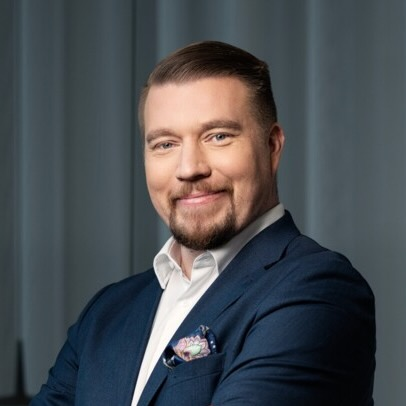

FUSE5G
Forum for Uniting Security Experts in 5G
04.02.2025, Bochum

Forum for Uniting Security Experts in 5G
Mobile networks play a critical role in our interconnected world, enabling seamless communication, data exchange and access to a wide range of services. One of the most important considerations in the area of mobile networks is security, given the increasing reliance on these networks for various aspects of our daily lives. As mobile devices become more integral to our personal and professional activities, the protection of sensitive information and the prevention of unauthorised access have become paramount. Establishing a dedicated forum where professionals from across industry, academia and government can come together to discuss the current state of mobile network security is critical to addressing emerging threats and vulnerabilities. This collaborative platform facilitates the exchange of insights, research findings and best practices, fostering a collective effort to improve the robustness of mobile network security. FUSE5G aims to foster a collaborative mobile network security community in Europe by providing a dedicated platform for researchers and industry professionals to share insights, discuss emerging threats, and collectively enhance the security measures of 5G networks.
The FUSE5G initiative will be kickstarted with a community event in Bochum, Germany on Tuesday February 4th 2025. Presenters from industry and academia will share a varied perspective on developments in mobile network security. The program is outlined below and includes ample opportunity to network with fellow security professionals. Participation is free of charge but we kindly request that you register upfront in view of limited capacity.
Program
| 10:00 | Opening | |
|---|---|---|
| 10:10 | Keynote: Mikko Karikytö, Head of product security at Ericsson | |
|  |
Fortifying the Future: Navigating 5G Security to unleashing an era of limitless potentialMikko Karikytö is the Chief Product Security Officer (CPSO) & Head of Mobile networks have revolutionized our world in profound ways. From 2G to 4G, we've witnessed the digital transformation with the advent of mobile internet, a flourishing app economy, and the enablement of IoT and platform-based business models—cornerstones of our contemporary digital ecosystem. As we transition to 5G, the stakes are higher than ever. This next-generation technology promises to unlock unparalleled value to new sectors of the society. However, with great potential comes great risk. As our reliance on these networks intensifies, our tolerance for disruptions and security breaches diminishes, rendering these systems critically vital. In my keynote, I will explore the pivotal role of security in the era of limitless potential facilitated by 5G. We will delve into strategic approaches to fortify these essential networks against an increasingly complex threat landscape, ensuring robust, resilient and privacy persevering digital infrastructures for tomorrow’s world. Join me as we navigate the intricate interplay of innovation and security at the heart of the mobile revolution. |
|
| 11:00 | Coffee Break and Poster Session | |
| 11:30 | Stephan Watzka, Deutsche Telekom | |
Telecoms and 5G: Why Standardization is Easier Said Than DoneThe rollout of 5G has brought significant advancements in connectivity, but it has also exposed critical challenges for telecom operators when implementing standardized technologies in the interconnect domain. A key issue is the adoption of Security Edge Protection Proxy (SEPP) for secure communication between carriers, raising questions around the balance between encryption and operational transparency requirements from carrier side. While encryption ensures robust security, it introduces complexity for operations teams, who face difficulties in monitoring, debugging, and maintaining seamless interoperability. The tension between maintaining carrier-to-carrier transparency and adhering to strict encryption standards has become a focal point of industry-wide discussion. This presentation explores the operational pain points caused by SEPP implementation, the trade-offs between carrier plaintext data and encryption, and the inherent limitations of current standardization approaches. Additionally, it looks ahead to 6G, discussing how future generations can learn from the 5G experience to create more efficient, adaptable, and operator-friendly standards. By addressing these challenges proactively, the telecom industry can better navigate the evolving landscape of interconnect technology and secure communication. |
||
| 12:00 | Talk 2: Alf Zugenmaier (Vice Chair 3GPP SA3, Munich University of Applied Sciences) | |
M5GA - 6G making 5G great again?Will 6G become a new generation or a mature version of 5G? |
||
| 12:30 | Lunch Break | |
| 13:30 | Talk 3: Ravishankar Borgaonkar (SINTEF) | |
TitleAbstract |
||
| 14:00 | Talk 4: Folkert Saathoff (srlabs) | |
TitleAbstract |
||
| 14:30 | Coffee Break and Poster Session | |
| 15:00 | Panel | |
| A panel of experts will discuss current topics in the context of 5G security and the potential of further community collaboration. | ||
| 16:00 | Drinks | |
Registration
The program sounds interesting? Great! You can register for the event using the registration form. In case of any questions, reach out to us via projectoffice at tno.nl
Address
Convention Center RUB
Universitätsstraße 150
44801 Bochum, Germany
Arrival via public transport
From Bochum Central Station, please take subway U35 (destination Hustadt) and use the stop "Ruhr-Universität Bochum". You can find the convention center (Veranstaltungszentrum) in the Mensa building.
Arrival via car
You can plan your route using Google Maps. A map of the campus with all facilities and different spots for parking can be found here.
Program Committee
Frank Fransen
Frank is a senior scientist in the cyber security technologies department at TNO. He is involved in national and EU research projects on automation of SOC & CSIRT operations, and in consultancy on a.o. security of mobile networks.
Richard Kerkdijk
Richard is a senior consultant in cyber security technologies at TNO. His role in the telco industry involves strategic (CISO oriented) advisory work and the coordination of TNO’s annual telco security benchmark. He also co-chairs the European Telecommunications ISAC.
Katharina Kohls
Katharina is an assistant professor at Radboud University in Nijmegen. Her research focuses on mobile network security and privacy, where she pointed out different flaws in our deployed mobile generations. She is a co-founder of Radix Security.
Lenny Zilverberg
Lenny is an event manager within TNO. In addition to organizing large, complex events, she also coordinates processes within TNO projects. Her work focuses mainly on internal as external communication.